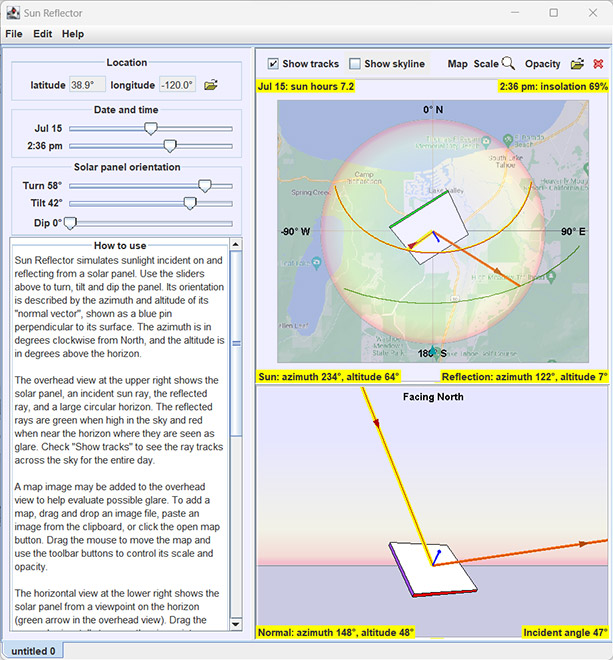

Download
The ZIP file contains the program itself (executable JAR file), the NOAA solar position calculator (Excel spreadsheet), and supporting libraries. To run, download SunReflector.zip (14.8MB), then unzip it, open the SunReflector folder, and double-click sunreflector.jar.
Source Code
Sun Reflector is free and open source. Download source code from GitHub at https://github.com/dobrown/sunreflector.
Legal
Copyright (c) 2023
Sun Reflector is free software; you can redistribute it and/or modify it under the terms of the GNU General Public License, Version 3.
Sun Reflector is distributed in the hope that it will be useful, but WITHOUT ANY WARRANTY; without even the implied warranty of MERCHANTABILITY or FITNESS FOR A PARTICULAR PURPOSE. See the GNU General Public License for more details.
Sun Reflector: A Solar Insolation and Reflection Simulator
Sun Reflector simulates sunlight striking and reflecting from a solar panel that can be oriented at will. The NOAA solar position calculator provides sun position data for all locations and dates.
Use Sun Reflector to optimize panel location and orientation for maximum daily sun hours and minimum reflection glare. Draw or trace a skyline (mountains, trees, buildings, etc) for more accurate sun hour estimates.
Sun Reflector is built on the Open Source Physics Java framework developed by Wolfgang Christian. It requires that Java version 1.8 or greater be installed on the host computer. Java is free and can be downloaded from https://www.java.com/en/download/manual.jsp.
